记录上海引进人才落社区公共户过程¶
请先阅读 《上海人才引进政策》，以下是我的上海人才引进，落社区公共户的完整过程
办理前准备¶
2018-06-29 更新居住证有效状态
因为居住地有变更，更新有效期和新的居住地址。18年以前居住证都是自动续签，一直没管，搬家了地址也没变，因为落社区公共户，户籍地址与当前的居住地址有关，最好更新。18年7月开始，《租赁备案》必须和房东网签，于是抓紧在6月29日前约房东去社区中心办理《租赁备案》，更新居住证最新住址和续期。居住证刚好到7月初续期，居住证新规：新办理居住证要半年后才拿到，居住证续期要本人在到期前30天去社区续期。
2018-07-10 更新原户口本信息
拜托家里人帮忙更新户口本信息，将本人学历和工作信息更新
递交材料¶
2018-7-20 收到 HR 通知
需要准备的材料：见人才引进政策
2018-7-21 原人才中心开具调档函和政审函
拜托家里人帮忙更新户口本信息，将本人学历和工作信息更新，去老家人才中心办调档函和政审函
2018-7-22 居住证重制
重新办理更新居住证，因为居住证上老家的地址还是旧的，为了保证新身份证、新户口本和居住证上信息完全一致，所以去社保中心更新居住证。居住证更新有效期、更新上海的住址不需要重新制卡，机器直接擦写。但是更新老家地址就必须重新办卡了。领新的居住证要等1个月。
2018-8-3 收到通知领取新的居住证
2018-8-6 提交材料
- 准备好14份材料，提交HR小组帮忙审核
- 人才引进申请报告 电子信息申请表 调档函 政审函 户口本 未婚证明 业绩考核 劳动合同 城保 个人纳税 学位证 学历证 社区公共户说明 居住证
2018-8-13 录入系统，打印申请表
HR在人才中心系统完成申请，打印申请表确认，确认了双学位学历无法录入系统，
2018-8-17 公司用印，HR 正式提交材料到人才中心
公司内部流程走完用印签报，提交原件和复印件到HR服务中心。
评审等待¶
2018-8-30
取回身份证、居住证、户口本等原件
2018-9-28
取回学历
2018-11-23
公示
公示后流程¶
2018-12-7 公示结束
2018-12-27 收到公司的答复，调令日期是12月13号开具的，有60天有效期
2018-12-27 办好准迁证
2018-12-28 回老家办好迁移证，人才中心办好调档函
2019-1-2 身份证拍照，办户口卡，申请新的身份证，正式成为新上海人。
整理成一副流程图：

成为新上海人后¶
2019-1-8 收到身份证，同时在上海人才中心 可以查到档案已经在上海归档了。
在 HR 处提交社保信息变更材料：调令复印件一份，户口卡复印件2份，身份证复印件2份，从业人员备案名册3份。
计划下一步办理《劳动手册》，即《就业创业证》。流程
2019-01-18 去梅园路人才大厦9楼办理了档案存档证明，不用缴档案管理费。如果不要档案存档证明，其实可以不用去。只要在shrc.com上能查到自己的档案信息就行了。
2019-01-20 办理《就业创业证》（“劳动手册”）。需要的材料是：身份证、2寸照片一张，上海户口本，毕业证书。当场办理当场拿到。
办理社保卡：带身份证，户口本。穿深色有领衣服，现场拍照。19年出新版社保卡，需要选择银行，没有平安银行。我选的招商。一两个月以后会邮寄到。
总结¶
自此，整个人才引进落户的流程就 Ending 了。